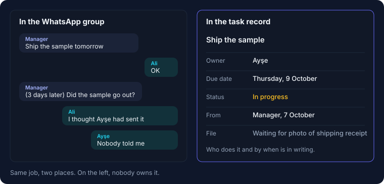
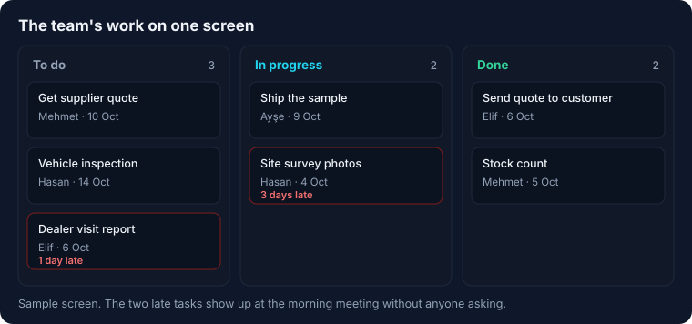

Task Management
Why does work go untracked? What task management software is for
In most companies, jobs are handed out verbally. They are mentioned in the corridor, requested over the phone, typed into the WhatsApp group. Some of them get done, some are forgotten, and for some somebody asks three days later, "what happened to that job?" This article explains why work goes untracked and how task management software fixes it.

Where does the job get lost?
A WhatsApp group looks handy for assigning work, because everybody is in it. But a hundred messages land in the group every day. The "let's ship that sample" message written in the morning is far up the screen by noon. Each of the three people who saw it assumes one of the others is dealing with it.
With jobs given verbally, things are even less clear. The person who gave the job remembers saying it. The person who received it does not remember the deadline, or never heard it. An argument follows in which both are right, and while they discuss who said what, the job is still not done.

The opposite also happens: two people do the same job. The customer gets two different quotes; the supplier is called twice. From the outside, the company looks disorganised.
The manager's day goes on chasing
When jobs are not written down anywhere, following them up falls to the manager's memory. First thing in the morning they ask everyone one by one: did the quote go out, did the vehicle go for inspection, did the photos come in from the site? A large part of the day goes this way.
This arrangement has another side effect. When the manager forgets to ask, the job is forgotten too. Over time the team learns that a job nobody asks about is not urgent.
The same gap opens up when someone leaves the company or goes on annual leave. Which jobs they were handling is known only to their own phone and their own head. Whoever covers for them starts from scratch, and promises made to customers fall through the cracks.
What does task management software change?
What it does is simple: it turns every job into a record. The record holds four things: what the job is, who will do it, by when, and what state it is in now. Once those four things are written down, most of the problems above disappear on their own.
The person who receives the job sees their own list on their phone. What they need to do today and what is late is clear. When they finish a job they tick it off and, if needed, attach a photo or a document.
The person who gave the job does not have to ask. They open the screen and see who has what, what is done and what is late. The morning meeting gets shorter; only the jobs that are stuck are discussed.

Recurring jobs go in here as well. The monthly stock count, the weekly dealer visit, vehicle inspection, contract renewal: each is defined once and drops onto the right person's list automatically when the day comes. Remembering them is no longer anybody's job.
For teams working in the field
In service, installation and field sales, the team spends most of the day out. To find out in the evening how much of the work handed out verbally in the morning was done, you wait for everyone to come back.
When tasks go to the phone, the field team carries the next job, the address and the customer note with them. When the job is done they take a photo and, if needed, get the customer's signature. The office sees it at the same moment. When the customer calls, you can say, "our team left half an hour ago; the job is complete."
Will the team see it as surveillance?
That is often the first reaction, and it needs to be taken seriously. If you use the system only to see who is late, the team will very quickly find ways to tick things off and move on.
The approach that works is for the system to make the employee's job easier first. Seeing their own jobs in one list, being spared the "nobody told me" argument, being able to hand over work properly before going on leave: these are a relief for the employee too. In our implementations that is the only goal in the first week. Reports and tracking of delays come later.
How do you start?
Start with one team and one rule: a job counts as assigned only if it is written in the system. Jobs given verbally or typed into the group are entered into the system afterwards. If that rule holds for two weeks, the rest is easy.
Do not bother with details such as categories, priorities and tags at the start. Job, person and date are enough. As the team gets used to it, you add the fields you find you need.
There are plenty of tools to choose from. Some are lightweight apps that only track tasks; others work together with customer and quote records. If your tasks are tied to a customer, an order or a project, you need the second kind (see What is CRM task management?). Otherwise you end up writing the same information in two places.
Frequently asked questions
Do we have to give up WhatsApp completely?
No. You can keep using it for conversation. The only thing that changes is that the job itself no longer stays in a message; it goes on record.
Isn't it too much for a ten-person company?
Ten people means thirty or forty separate jobs a day. No one person can keep all of them in their head anyway. At this size a simple tool is more than enough.
What if the team doesn't use it?
If the manager does not use it, the team will not either. If jobs are assigned through the system and status is followed through the system, the habit forms within a few weeks.
Let’s bring order to your business too.
We map the path of one of your orders together and see where it gets stuck.